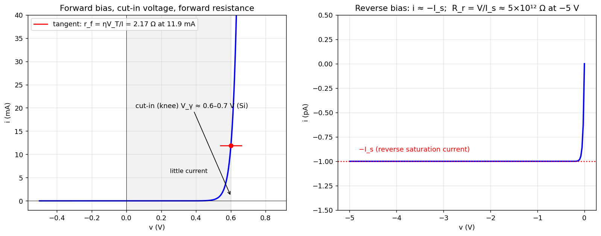

Basic Electrical Engineering · Problems · 1 min read
A-Q4 — Forward/Reverse Bias, Cut-in Voltage, Saturation Current, Resistances
Hub: Tutorial 5 on Diode Circuits and Applications · Previous: A-Q3 - V-I Characteristics of a p-n Diode · Next: A-Q5 - Applications of Diodes
Explain: (i) forward bias, (ii) reverse bias, (iii) cut-in voltage, (iv) reverse saturation current, (v) forward-bias and reverse-bias resistance.
1. Definitions
| Term | Meaning |
|---|---|
| Forward bias | p side (anode) connected to the positive terminal, n side (cathode) to the negative. The barrier is lowered, the depletion region narrows, and a large current flows (limited by the external circuit). |
| Reverse bias | anode connected to the negative terminal. The barrier is raised, the depletion region widens, and only a very small current flows. |
| Cut-in (threshold, knee) voltage | the forward voltage below which the current is negligible and above which it rises rapidly. Si ≈ 0.6–0.7 V, Ge ≈ 0.2–0.3 V, GaAs LED ≈ 1.2–2 V. It follows from for a "useful" current . |
| Reverse saturation current | the small, nearly voltage-independent reverse current due to thermally generated minority carriers. Strongly temperature dependent (doubles per ≈ 10 °C). |
| Forward (dynamic) resistance | ( at 300 K): small, a few ohms at tens of mA. |
| Reverse resistance | (static) — very large (MΩ–TΩ). |
The ideal diode is the limit , , .
2. Illustration

Example with pA, :
| Quantity | Value |
|---|---|
| current at V | mA |
| forward resistance there, | 2.17 Ω |
| reverse resistance at V, | |
| forward-to-reverse resistance ratio |
Static vs dynamic resistance
Static: (slope of the line from the origin). Dynamic: (slope of the tangent). For a diode in the forward region the dynamic resistance is far smaller than the static value .